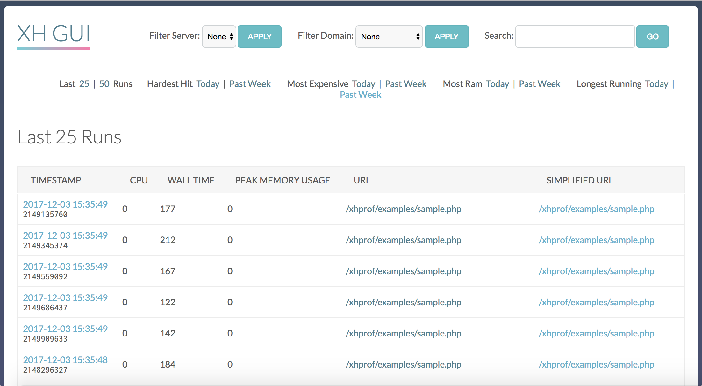
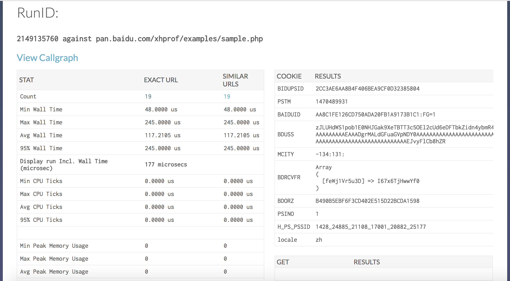
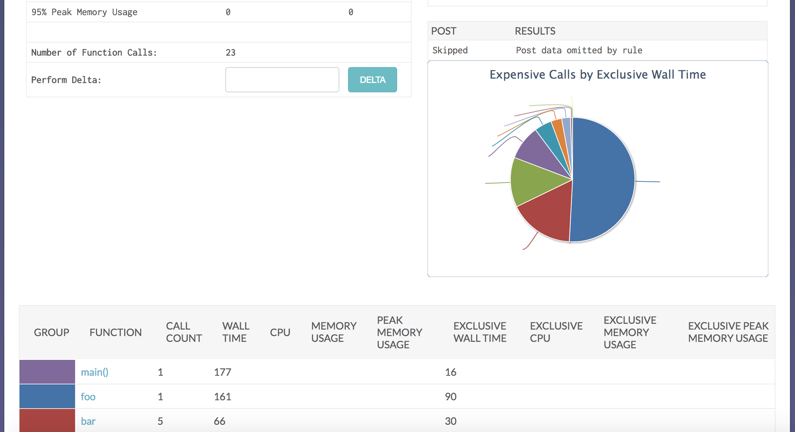
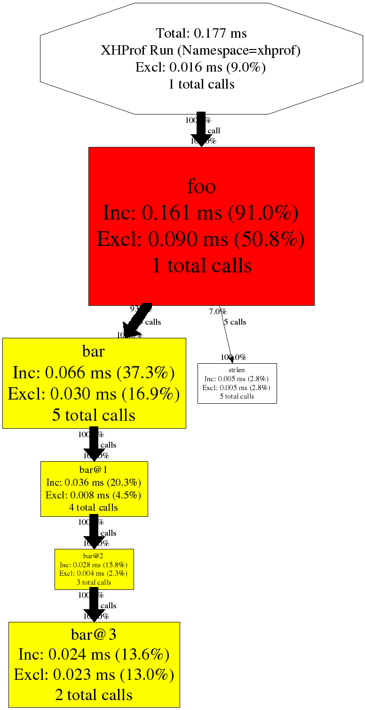

XHProf UI
项目信息见github - xhprof ui
类似工具
- XHGui - 使用 MongoDB 作为后端存储
主要功能
- 默认显示最近25，50条请求性能信息（可以定制）
- 当天cpu使用最高，内存使用最高，响应时间最长排序
- 支持域名、URI等多个维度的数据索引
- 函数调用记录完整，内核级别函数调用情况
- 调用关系动态图
- 支持按请求百分比执行xhprof优化。降低服务器负载
- 友好的界面
- 数据库存储（mysql）
依赖
除了能运行php的web服务环境外，还需要一下环境：
php5-xhprof：函数调用性能数据获取php扩展；php5-mysql：mysql客户端php扩展；mysql：mysql服务端；版本建议使用5.3以下，不要使用mysql5.6会报Incorrect integer value: '' for column 'cpu' at row 1错误，如果实在要用，请把表结构中的int字段都改成varchar；graphviz：使用dot生成调用关系动态图libpng)；
Installation
依赖环境 (以mac为例)
- 安装运行php的web服务环境；安装php扩展
xhprof.so,mysql.so，并配置好php.ini；brew install php5-xhprof php5-mysql
注意： 对于xhprof扩展，php5.4及以上版本不能在pecl中下载，不支持。需要在github上下载https://github.com/facebook/xhprof。 另外xhprof已经很久没有更新过了，截至目前还不支持php7。当前目录extension已经存在源代码，只需要编译一下，如下：
cd extension/ sudo phpize sudo ./configure sudo make && make install
修改php.ini
[xhprof]
extension=xhprof.so
[mysql]
extension=mysql.so
- 安装
MySQL server；brew install mysql mysql.server restart - 安装
graphviz；执行dot --help可用；brew install graphviz dot --help - 克隆该仓库到web服务器的工作目录；
git clone https://github.com/echoOly/xhprof.git - 确保目录
xhprof_html能通过http访问，并且配置web服务器使xhprof_html下的css,js可以被访问；location ~ \.(css|js)$ { root /home/www/; }项目配置
- 移动
xhprof_lib/config.sample.php为xhprof_lib/config.phpmv xhprof_lib/config.sample.php xhprof_lib/config.php - 根据实际情况配置
xhprof_lib/config.php
$_xhprof = array();
// Change these:
$_xhprof['dbtype'] = 'mysql'; // 数据库类型
$_xhprof['dbhost'] = 'localhost'; // 数据库host
$_xhprof['dbuser'] = 'root'; // 数据库用户名
$_xhprof['dbpass'] = 'root'; // 数据库密码
$_xhprof['dbname'] = 'xhprof'; // 数据库名称
$_xhprof['dbadapter'] = 'Mysql'; // 驱动的方式 会掉起utils/db/下对于的数据库类
$_xhprof['servername'] = 'servername'; // 服务名称
$_xhprof['namespace'] = 'myapp';
$_xhprof['url'] = 'http://127.0.0.1/xhprof/xhprof_html'; // ui网站的访问地址
$_xhprof['getparam'] = "_profile"; // 在监控的接口增加参数&_profile=1，会在原始接口中吐出性能监控的采样数据
$_xhprof['serializer'] = 'php'; // 数据库中get post序列化方式 支持json php序列化
// 生成调用关系图 安装`graphviz`后dot的配置
$_xhprof['dot_binary'] = '/usr/bin/dot';
$_xhprof['dot_tempdir'] = '/tmp';
$_xhprof['dot_errfile'] = '/tmp/xh_dot.err';
// 下面配置只要请求链接中包含都会过滤
$ignoreURLs = array(); // 黑名单，即忽略的url
$ignoreDomains = array(); // 忽略的Domains
$exceptionURLs = array(); // 底部不显示性能采样的地址的接口
$exceptionPostURLs = array(); // 不保存post的
$exceptionPostURLs[] = "login";
$_xhprof['display'] = false; // 是否在接口底部显示性能采样的地址
$_xhprof['doprofile'] = false; // 默认要不要开始性能监控，都会走上面过滤策略修改赋值
$_xhprof['show_cpu'] = false; // 是否采样cpu信息 默认不开
$_xhprof['show_mem'] = false; // 是否采样内存信息 默认不开
// false 不对客户端亲请求ip限制， true时只对白名单中的进行数据采样
$controlIPs = false;
// 采样ip白名单
//$controlIPs = array();
//$controlIPs[] = "127.0.0.1"; // localhost, you'll want to add your own ip here
//$controlIPs[] = "::1"; // localhost IP v6
// 采样url白名单
$controlUrls = false;
//$controlUrls = array();
//$controlUrls[] = "/userinfo"; //you'll want to add your own url here
//$otherURLS = array();
// 可忽略的采样方法
//$ignoredFunctions = array('call_user_func', 'call_user_func_array', 'socket_select');
// 采样概率 1%$weight 采样 优先取环境变量中`xhprof_weight`得值
$weight = 100;
if($domain_weight = getenv('xhprof_weight')) {
$weight = $domain_weight;
}
使用方式
- 创建数据库 并导入表结构： 如果使用
mysql5.6会报Incorrect integer value: '' for column 'cpu' at row 1错误，请把表结构中的int字段都改成varchar；CREATE TABLE `details` ( `id` char(17) NOT NULL, `url` varchar(255) NOT NULL default '', `c_url` varchar(255) NOT NULL default '', `timestamp` timestamp NOT NULL default CURRENT_TIMESTAMP on update CURRENT_TIMESTAMP, `server name` varchar(64) NOT NULL default '', `perfdata` MEDIUMBLOB, `type` tinyint(4) NOT NULL default '0', `cookie` BLOB, `post` BLOB, `get` BLOB, `pmu` int(11) unsigned NOT NULL default '0', `wt` int(11) unsigned NOT NULL default '0', `cpu` int(11) unsigned NOT NULL default '0', `server_id` varchar(32) NOT NULL default 't11', `aggregateCalls_include` varchar(255) NOT NULL DEFAULT '', PRIMARY KEY (`id`), KEY `url` (`url`), KEY `c_url` (`c_url`), KEY `cpu` (`cpu`), KEY `wt` (`wt`), KEY `pmu` (`pmu`), KEY `timestamp` (`timestamp`) ) ENGINE=innodb DEFAULT CHARSET=utf8;- 引入监控入口文件
xhprof/external/header.php
- 在需要监控的项目的
index.php，直接引入：require_once 'xhprof/external/header.php';php|Nginx配置php模块启动就加载；以php为例，修改php.ini:auto_prepend_file=/var/www/xhprof/external/header.php- 访问采样数据，请求
/xhprof/xhprof_html/index.php示例网站- 访问网站9aipay.com
- 采样数据xhprof ui 更多精彩
- mac_tools
效果图：
- 首页列表 
- 调用详细1 
- 调用详细2 
- 调用关系图 